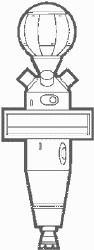
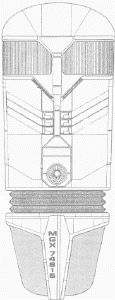

Sonde della Flotta Stellare |
La maggior parte delle navi stellari e delle stazioni spaziali sono
equipaggiate con un certo numero di sonde, il cui numero e caratteristiche varia
a seconda del tipo e del profilo della missione del vascello o della base.
Una sonda è un sistema automatico senza equipaggio a bordo in grado di
effettuare rilevamenti, di segnalare posizioni, di fungere da rilancio di
segnale o di espletare qualsiasi altra funzione prevista dalla programmazione e
dalla progettazione della medesima.
Le sonde vengono catalogate in classi, in relazione alla tipologia delle funzioni che possono espletare. Tutte le sonde hanno lo scafo esterno in lega di duranio-tritanio e le finestre di alcuni sensori che sono rivestite da un triplo strato di alluminio trasparente. I sensori che non utilizzano le finestre sono incorporati attraverso vari metodi, dal miscelamento in superficie con il materiale dello scafo ad una unione dei sensori attivi con lo scafo stesso. Tutte le sonde hanno a bordo una dotazione standard di strumenti per la rilevazione e l'analisi di tutte le bande elettromagnetiche e subspaziali, di composti chimici organici ed inorganici, di componenti d'atmosfera e delle proprietà delle forze meccaniche. Tutte le sonde sono progettate per resistere allo shock dell'ingresso in atmosfera, ma solamente tre classi sono progettate per eseguire manovre in atmosfera e atterrare.
| Classe I - Sonda Sensore | |
 |
Area operativa: 200.000 Km Limite delta-v: 0,5 c Alimentazione: Vettore a micro-fusione di deuterio Sensori: Elettromagnetici, subspaziali, interstellari Telemetria: 12.500 canali a 12 megawatt di potenza di trasmissione |
| Classe II - Sonda Sensore | |
|  | Area operativa: 400.000 Km Limite delta-v: 0,65 c Alimentazione: Vettore a micro-fusione di deuterio con un serbatoio aggiuntivo di carburante Sensori: Elettromagnetici, subspaziali, interstellari, rilevatori di campo e di particelle a lungo raggio potenziati, sistemi di immagine Telemetria: 15.650 canali a 20 megawatt di potenza di trasmissione Note: Modifica della Classe 1 |
| Classe III - Sonda Planetaria | |
 |
Area operativa: 1.200.000 Km Limite delta-v: 0,65 c Alimentazione: Vettore a micro-fusione di deuterio Sensori: Sensori per attività planetaria e giganti di gas, equipaggiata con un sottomodulo per le analisi chimiche Telemetria: 13.250 canali a 15 megawatt di potenza di trasmissione Dati addizionali: Scafo rinforzato con un limitato SIF (Stuctural Integrity Field, Campo di integrità strutturale); programmata per tutti i tipi di atterraggio calibrato e per le missioni sotto la superficie; resistenza alla pressione fino a 450 bar per le missioni nelle atmosfere delle giganti di gas; tempo di permanenza limitato |
| Classe IV - Sonda per Analisi Stellari | |
 |
Area operativa: 3.500.000 Km Limite delta-v: 0,60 c Alimentazione: Propulsione a micro-fusione di deuterio vettorizzato rinforzato con bobine di guida e serbatoio supplementare di deuterio Sensori: Rilevatori a tripla ridondanza per l'analisi dei campi stellari e delle particelle; dispositivo per l'analisi dell'atmosfera stellare Telemetria: 9.780 canali a 65 megawatt di potenza di trasmissione Dati addizionali: Sei mini-sonde eiettabili capaci di resistere a radiazioni di flusso; utilizzabile per fenomeni con energia non stellare Note: Modifica della Classe III |
| Classe V - Sonda di Ricognizione a Medio Raggio | |
 |
Area operativa: 43.000.000.000 Km Limite delta-v: Warp 2 Alimentazione: propulsore materia/antimateria; estesa durata subluce, limitata durata in Warp Sensori: Sistemi estesi di registrazione e acquisizione passiva dei dati; possibilità di compiere una missione e ritornare in modo completamente autonomo Telemetria: 6.320 canali a 2,5 megawatt di potenza di trasmissione Dati addizionali: Capacità di atterraggio calibrato sulla superficie; materiali dello scafo e del rivestimento con un basso indice di individuabilità; può essere modificata per applicazioni tattiche con l'aggiunta di un kit per le contromisure elettroniche. |
| Classe VI - Ripetitore per Comunicazioni - Radiofaro di Emergenza | |
 |
Area operativa: 43.000.000.000 Km Limite delta-v: 0,8 c Alimentazione: Motore a micro-fusione ad alta potenza Sensori: Equipaggiamento standard Telemetria e comunicazione: 9.270 canali radiofrequenza; operazioni di ricetrasmissione subspaziale con una potenza irradiata di picco di 350 megawatt; antenna con copertura di 360°; antenna con risoluzione di puntamento ad alto guadagno Dati addizionali: Serbatoio supplementare di deuterio per l'alimentazione delle comunicazioni e per eventuali cambi di orbita Note: Modifica della Classe III |
| Classe VII - Sonda per lo Studio di Popolazioni | |
 |
Area operativa: 450.000.000 Km Limite delta-v: Warp 1,5 Alimentazione: Propulsore materia/antimateria Sensori: Sistema passivo di raccolta dati e ricetrasmettitore subspaziale Telemetria: 1.050 canali a 0,5 megawatt di potenza di trasmissione Dati addizionali: Applicabile per civiltà fino a livello tecnologico III; materiali dello scafo e del rivestimento con un basso indice di individuabilità; 3,5 mesi di tempo massimo di impiego; dispositivo anti-manomissione di autodistruzione molecolare a basso impatto Note: Modifica della Classe V |
| Classe VIII - Sonda Warp Multimissione a Medio Raggio | |
 |
Area operativa: 120 anni luce Limite delta-v: Warp 9 Alimentazione: Propulsore materia/antimateria con sostenitore di campo Warp; autonomia di 6,5 ore a Warp 9; generatore ausiliario di energia per l'alimentazione dei sensori e del ricetrasmettitore subspaziale Sensori: Standard più i moduli specifici di missione Telemetria: 4.550 canali a 300 megawatt di potenza di trasmissione Dati addizionali: Alta adattabilità a vari tipi di missione, dalla ricerca alla ricognizione Note: Utilizza lo scafo di un siluro fotonico |
| Classe IX - Sonda Warp Multimissione a Lungo Raggio | |
 |
Area operativa: 760 anni luce Limite delta-v: Warp 9 Alimentazione: Propulsore materia/antimateria con sostenitore di campo Warp; autonomia di 12 ore a Warp 9; serbatoio di carburante ausiliario per una durata massima di volo a Warp 8 di 14 giorni Sensori: Standard più i moduli specifici di missione Telemetria: 6.550 a 230 megawatt di potenza di trasmissione Dati addizionali: Limitata capacità di carico utile; capacità di registrazione fino a 3.400 Kiloquads di memoria isolineare; trasponder a 50 canali Note: Utilizza lo scafo di un siluro fotonico; un'applicazione tipica di questa sonda è come capsula di emergenza per i diari di bordo con rotta impostata verso la base stellare più vicina o verso una nave della Flotta Stellare con posizione nota |
| Nuova Classe I - Sonda Sensore | ||
 |
Sistema di propulsione: Unità a impulso Illman #447-000 Velocità massima: 0.75c Massima autonomia a potenza di impulso: 4 ore Armamento: Nessuna arma di offesa, solo una carica esplosiva per l'autodistruzione Raggio di trasmissione: 60 parsec su banda subspaziale Sicurezza: I dati contenuti all'interno sono accessibili solamente mediante un doppio codice che, in caso di errato inserimento, attiva immediatamente la sequenza di autodistruzione. Lunghezza: 2,9 metri Larghezza: 0,9 metri Altezza: 0,4 metri Note: La funzione principale della nuova Classe I consiste nell'estendere le capacità sensorie della nave dalla quale viene lanciata, andando in aree potenzialmente e dichiaratamente pericolose per le forme di vita o in luoghi non accessibili per un vascello stellare. Le navi della Federazione tendono a trasportare solamente questo tipo di sonda, cercando così di standardizzare l'equipaggiamento.
|
Sottotipi: REC01 Ricognizione planetaria, mappatura, rilievi geologici, monitoraggio comunicazioni e scanning popolazioni REC11 Ricognizione spaziale profonda, adatta per aree pericolose per le forme di vita SCT01 Scout, funzione di avanscoperta in missioni di pattugliamento di confine. NAV01 Boa statica per la navigazione DSR01 Scatola nera della nave, porta i diari di bordo e viene lanciata solo in caso di estremo pericolo, può venire recuperata. ESP01 Contromisure elettroniche, emette segnali di disturbo su tutta la banda subspaziale e blocca le comunicazioni nel raggio di 60 parsec. ESP11 Contromisure elettroniche, simula tutta la gamma di radiazioni emesse da una nave stellare di classe Galaxy PNT01 Trasporto di personale, può portare un umanoide mantenuto in vita tramite stasi. |
| Sonda MGX | |
|  | Lunghezza: 114,3 metri Larghezza: 42,1 metri Altezza: 26 metri Stazza: 106.000 tonnellate Velocità di crociera: Warp 5 Velocità massima: Warp 6.5 Durata della propulsione Warp in velocità di crociera: 11 anni Armamento: nessuno Difese: scudi; dispositivo di occultamento Comunicazioni: 6.000 canali su banda subspaziale; canali codificati sulle bande elettromagnetiche; collegamento visuale olografico Computer: Nucleo di memoria Mark XII a matrice duotronica; 17 sistemi di acquisizione dati indipendenti; tripla ridondanza dei sistemi di navigazione; programmazione basata su algoritmi di intelligenza artificiale Manutenzione: Possibilità di ospitare fino a otto tecnici per la manutenzione, ma solamente quando il motore a curvatura è spento Note: si tratta, in pratica, di una gondola Warp contenente l'attrezzatura di una sonda di esplorazione di spazio profondo |